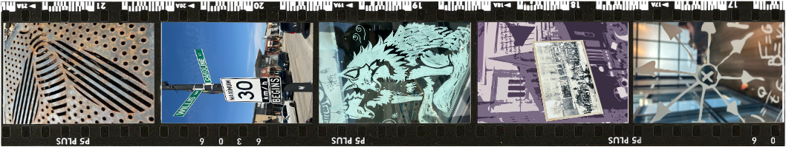

Get to know me!
I'm a designer and student at the University of Waterloo who loves creating work that means something. Whether it's graphic design, UX/UI, or web design, I'm drawn to projects that bring people together and tell a story."
When I'm not designing, you can find me at the local library with a new book! feel free to check out my work and connect with me on Linkedin.
connect with me on Linkedin @ www.linkedin.com/in/sandy-srinivasan
or
by email @ sandysri-711@gmail.com!

 sandysri0711@gmail.com
sandysri0711@gmail.com
 www.linkedin.com/in/sandy-srinivasan
www.linkedin.com/in/sandy-srinivasan